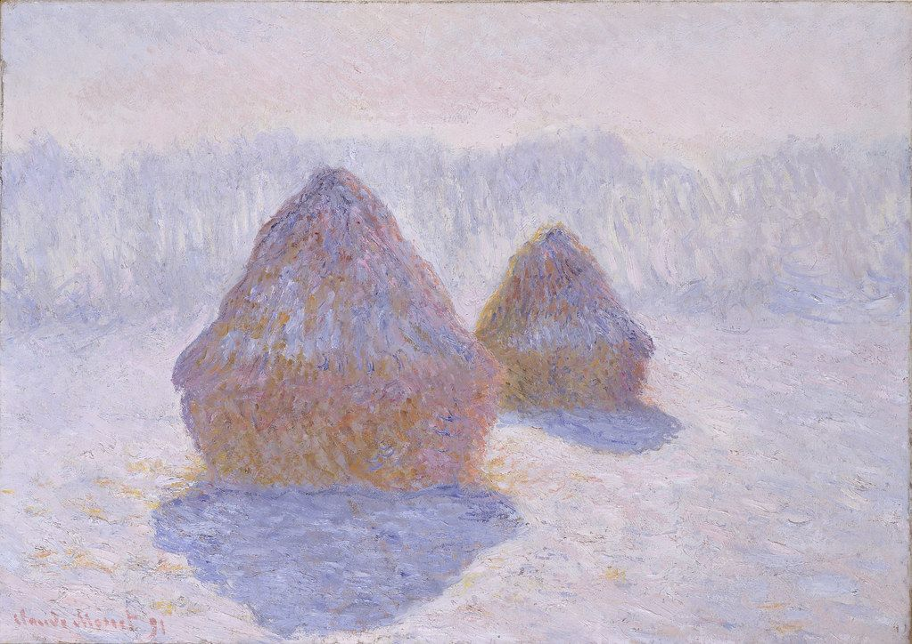

יחידות / 06
יחידה 06
סגנון אישי כמקור השראה
קול · בחירה · דרך

יחידת הסיום. התלמידים משלבים את כל מקורות ההשראה הקודמים לסגנון אמנותי אישי קוהרנט.
6 שיעורים + תיק עבודות סופי
- השראה
- התבוננות
- רעיון
- יצירה
מקורות השראה ורקע על האמנים

אמנים ביחידה
- פבלו פיקאסושיעור 6.2
- פול סזאןשיעור 6.2
- קלוד מונהשיעור 6.3
- אנדי וורהולשיעור 6.3
- דייוויד הוקנישיעור 6.3
גישות
- ניתוח סגנון
- הצהרת אמן
- בניית תיק עבודות
- ביקורת עמיתים
השיעורים
-
6.1
מהו הקול החזותי שלך?
זיהוי הסימנים, הצבעים והנושאים הייחודיים לך
על השיעור
התלמידים סוקרים את עבודתם מכל היחידות ומתחילים לזהות אלמנטים חוזרים, אילו נושאים, צבעים, סימנים ונושאים הם חוזרים אליהם. מהי החתימה החזותית שלהם?
50 דקות בפיתוח -
6.2
השפעה מול חיקוי
כיצד אמנים גדולים למדו מאחרים מבלי לאבד את עצמם
על השיעור
פיקאסו אמר: 'אמנים טובים לווים, אמנים גדולים גונבים.' התלמידים בודקים כיצד אמנים ספגו ושינו השפעה, ויוצרים עבודה בסגנון אמן מעריץ, ולאחר מכך עוקרים אתו משישתו.
55 דקות בפיתוח -
6.3
חשיבה סדרתית
מדוע אמנים גדולים חוזרים לאותו נושא שוב ושוב
על השיעור
מונה צייר 250 ערימות שחת. וורהול יצר 32 פחית מרק קמפבל. התלמידים מתחילים סדרה משלשת חלקים משלהם המגיבה לנושא אחד שבחרו.
55 דקות בפיתוח -
6.4
כתיבת הצהרת האמן שלך
כיצד מסבירים במילים מה אתה יוצר ולמה?
על השיעור
התלמידים מנסחים הצהרת אמן, מתארים את השראותם, גישתם וכוונותיהם, דרך הנחיות מובנות ודוגמאות אמיתיות מאמנים עכשוויים.
45 דקות בפיתוח -
6.5
שיחת עמיתים: מתן וקבלת משוב
ביקורת עמיתים מובנית ככלי לצמיחה
על השיעור
התלמידים משתתפים בביקורת עמיתים מובנית באמצעות מסגרת 'תאר, נתח, פרש, הערך', ומפתחים את יכולתם לדבר על אמנות ולקבל משוב באופן פרודוקטיבי.
50 דקות בפיתוח -
6.6
✦ תיק עבודות והצגה סופית פרויקט מסכםפרויקט מסכם
סיום הקורס: תיק עבודות, הצהרת אמן והצגה
על השיעור
התלמידים מציגים את תיק העבודות הערוך שלהם מכל הקורס, כולל הצהרת אמן והצגה קצרה לחברי הכיתה או לוועדה.
שיעור מלא בפיתוח